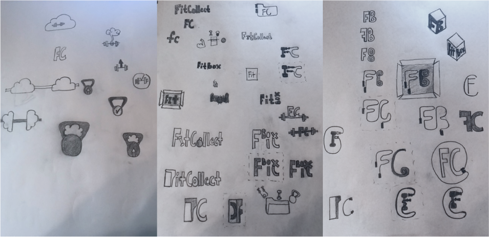
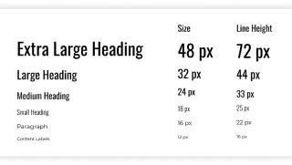

The client started with a desire to enter the cloud storage space. They knew that there were many features that could be offered.
“I used to have a workout like that. I used to have it in my email, but last time I was at the gym I couldn’t find it. I feel like I always lose workouts I try and then I have to find new ones.”
FitCollect utilizes cloud storage to help active users save time so they can spend it doing what they do best: achieving their fitness goals.
Want to upload photos and videos
Want to create workouts with spreadsheets and documents
Find collaboration unimportant for fitness use
Want to save content from the web
Prefer a mobile application for fitness
Prefer folder organization
Collaboration is unimportant to the fitness user and isn’t a feature they see themselves using.
Creating workouts in the form of spreadsheets and documents is much more important than previously discovered in the surveying.
When learning from the competition, I decided to analyze Google Drive, Box, and Pinterest for a personal use viewpoint. Below are the key findings:
Amount of free storage is important to users and should be offered at 10GB to remain competitive.
There needs to be a strong user flow for adding and organizing an item similar to Pinterest’s fluid organization.
An image format is needed for workout previews to maintain a fun, personal use similar to Pinterest.
“I don’t like using spreadsheet apps but I also hate keeping up with my notebook.“
Stay in shape, increase the amount of weight he can lift, balance fitness and social life.
Spreadsheet apps not working for fitness purposes, Keeping up with a workout notebook.

“I try an awesome workout from Popsugar or somewhere else and I go to look for it later and can’t find. Then I have to try to figure something else out.“
Get in shape for bikini season so she feels confident on her travels. Try out new workouts.
Scrolling through her photos and emails to find workouts when she’s at the gym.
After conducting my user research and learning the necessary features based on users and competition, I put my user stories to work and designed the user flows needed for an MVP.

To begin my wireframing I first put together my content strategy and site map. Detailing the site map left very few questions when starting the wireframing process.

To begin wireframing I sketched out all of the screens needed for the MVP along with alternative variations.

After finalizing my sketches, I put them into Figma to create my first low fidelity wireframe to begin usability testing.


After user feedback, I altered my wireframes for further testing. Below were the key takeaways:
Users expected a separate screen for their folder content instead of an expandable folder on the dashboard.
Users needed confirmation that their item had actually been organized and the task was complete.
Users had trouble distinguishing from folders and unorganized content. This needed to be made clear for wireframes and kepts in mind when visually designing.

After alterations and another round of usability testing, users were able to complete high priority tasks and I was able to move on to visual design.
FitCollect is trendy, daring, confident, real, and inspiring.
This logo mark was chosen and created due to it’s inclusive use in the fitness industry. From weightlifters to yogis, anyone can incorporate it into their workout routine.
FitCollect’s complementary color palette was chosen to convey activity, energy, life, action, and confidence. It was also chosen to be gender neutral, appealing to all types of fitness enthusiasts.

Typography guidelines were given in the style guide in order to maintain proper hierarchy and branding.
Icons were designed to fit the FitCollect brand, showing sharp edges to maintain a confident and daring personality.
The visual design of the FitCollect app changed greatly after several rounds of usability testing and preference testing for the UI and workout display.


Users prefer a lighter UI.
Users want a larger picture representing their workouts.
Users prefer a vertical add expansion instead of the circle expansion above.
These findings were implemented in the next version below.


Users had trouble with choosing a folder. Hierarchy had to be given to the task at hand for the next iteration.
There was also an issue with information architecture when looking at long folder names. The folders needed to take up the entire screen instead of half in order to fix this.
Users associated the pencil icon with editing instead of the intended use of creating. A new icon had to be designed.
Feedback from users showed that the save feature would only be used for copied links and not images. Users would instead use the upload button for images. The save icon needed to be changed to represent a link instead.


After more testing, FitCollect proved to be much more usable and matched the intended brand.
When designing a user survey, the questions need to direct the users towards the specific niche so that the results are as accurate as possible. Answers about cloud storage in general aren’t necessarily helpful for a fitness storage app.
Getting critiqued by other designers is essential in catching designing flaws and improving the overall work.
User perception doesn’t always match your own perception. Asking how users perceive icons and UI elements is essential when designing for a specific function such as ‘Creating a workout’.
Going forward I would like to problem solve specifically for the spreadsheet user. What exactly is preventing them from using current mobile spreadsheet designs?
What interactions need to be improved when what you are entering is specifically related to fitness and the pounds you lift?
Should there be a preset column and row titles to guide proper organization of a routine? What should a toolbar look like for fitness content? Should a modal pop up to guide the data entry for reps, sets, and weights? How should this be displayed in the cells?